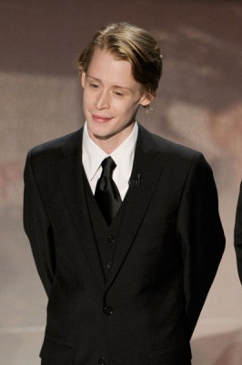
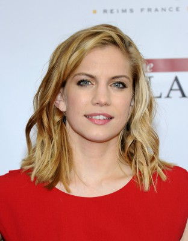
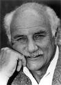

#8584 My Girl - Meine erste Liebe
Alternativ: My Girl

 IMDB-Wertung: 6.8 / 10
IMDB-Wertung: 6.8 / 10  Metascore: 0
Metascore: 0 
Seit die Mutter der kleinen Vada gestorben ist, lebt sie bei ihrem Vater Harry Sultenfuss, einem Bestattungsunternehmer. Die meiste Zeit verbringt sie mit ihrem besten Freund Thomas J., der gegen so ziemlich alles allergisch ist. Als sich Vadas Vater in seine Angestellte Shelly verliebt, rastet das Mädchen beinahe aus und unternimmt fast alles, um das Liebespärchen wieder zu trennen…
Jahr: 1991
Dauer: 102 Minuten
FSK: 6
Land: USA Studio: Columbia PicturesTonspuren: DD2.0 - ,
Untertitel: Deutsch,
Auflösung: 1080p (1920x1040) Größe: 7823 MB
Genre: Drama, Komödie, Familie, Liebe
Regisseur: Howard Zieff
Drehbuch: Tommy Wiseau
Soundtrack: James Newton Howard
Darsteller:
 Dan Aykroyd als Harry Sultenfuss
Dan Aykroyd als Harry Sultenfuss Jamie Lee Curtis als Shelly DeVoto
Jamie Lee Curtis als Shelly DeVoto-  Macaulay Culkin als Thomas J. Sennett
-  Anna Chlumsky als Vada Sultenfuss
 Richard Masur als Phil Sultenfuss
Richard Masur als Phil Sultenfuss Griffin Dunne als Mr. Bixler
Griffin Dunne als Mr. Bixler- Ann Nelson als Gramoo Sultenfuss
-  Peter Michael Goetz als Dr. Welty
- Jane Hallaren als Nurse Randall
- Tom Villard als Justin
- Lara Steinick als Ronda
- Kristian Truelsen als Charles
- David Caprita als Ray
- Shane Obedzinski als Billy
- Anthony Giaimo als Carnival Barker
- Lynn Sellers als Suzanne
- Blair Barnette als Bumper Car Driver (uncredited)
- Sven Granlund als Extra (uncredited)
- Kevin Scott Richardson als Bumper Car Driver (uncredited)
- Anthony R. Jones als Arthur
- Jody Wilson als Mrs. Hunsaker
- Linda Perri als Betty
- Nancy L. Chlumsky als Jackie
- Glenda Chism als Thomas J.'s Mother
- Bill Cordell als Thomas J.'s Father
- Ray Buktenica als Danny
- George Colangelo als Ralph
- Anthony Finazzo als Howie
- Zachary McLemore als Zack
- T.J. Collazo als Boy
- Cassi Abel als Judy
- Amanda Cole als Girl
- Bree Butler als Girl
- Harvey Bellman als Bingo Announcer
- John DeRussy als Vernon
- Henry Kohn als Carl
- Florence Mistrot als Margie
- Edgar Allan Poe IV als Carnival Barker
- Robert V. Girolami als George
- Kurt Smildsin als Policeman
- Paul Nagle Jr. als Minister
- Victor Iemolo als Bumper Car Driver (uncredited)
- L.A. Rothman als Anna (uncredited)
Datei: X:\2-Dilogie(G-M)\My Girl\My Girl - Meine erste Liebe (1991, FSK6, 1920x1040).mkv seit 22.03.2018
Festplatte: HD Collection-2(A-Z)-3(A-M)
 Alle Filme aus Gruppe '2-Dilogie(G-M)\My Girl'
Alle Filme aus Gruppe '2-Dilogie(G-M)\My Girl'